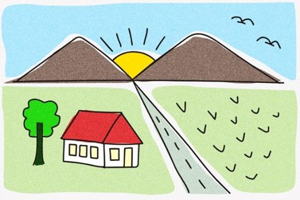

Tugas 1 Grafika Komputer
Reproduksi ilustrasi 2D menggunakan WebGL murni + animasi
Bara Semangat Rohmani (NRP 5025241144)

Klik canvas untuk mengulang seluruh animasi.
Reproduksi ilustrasi 2D menggunakan WebGL murni + animasi

Klik canvas untuk mengulang seluruh animasi.